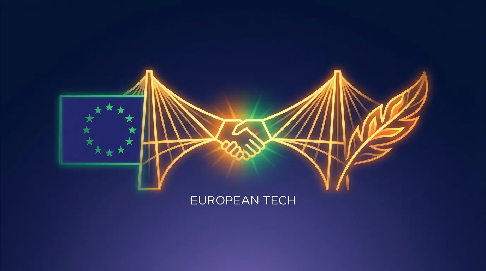
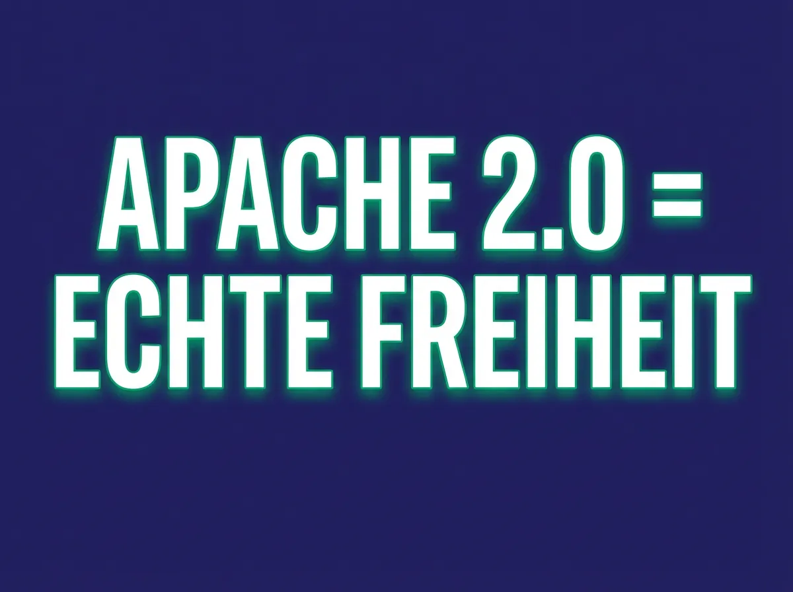

KI-Strategie · · 11 Min.
"Open Source" ist ein Trugschluss: Was der Llama-4-Ausschluss für österreichische KMUs bedeutet
Aus dem Archiv: Dieser Beitrag ist vor über einem halben Jahr erschienen. Manche Zahlen und Produktnamen haben sich seither geändert.

„Open Source" ist ein Trugschluss: Was der Llama-4-Ausschluss für österreichische KMUs bedeutet
Das Wichtigste in Kürze

- Meta hat mit Llama 4 (April 2025) alle EU-Unternehmen und EU-Bürger von der Nutzung ausgeschlossen – ohne Vorwarnung
- „Open Weights" ist nicht Open Source: Die Modellgewichte sind öffentlich, aber die Nutzung ist durch proprietäre Lizenzen eingeschränkt
- Laut der Open Source Initiative erfüllt kein einziges Llama-Modell die offizielle Open-Source-Definition
- Europäische Alternative: Mistral Large 3 (Apache 2.0) bietet echte Rechtssicherheit ohne geografische Einschränkungen
- Die Modellwahl ist keine technische Entscheidung mehr – sie ist eine Souveränitätsentscheidung
Wenn ich in meinen WIFI-Workshops frage, welche KI-Modelle „Open Source" sind, kommt fast immer: „Llama von Meta". Die Antwort ist verständlich – Meta kommuniziert die Modelle als „offen". Sie ist aber rechtlich falsch.
Am 5. April 2025 hat Meta Llama 4 vorgestellt – und gleichzeitig die gesamte EU von der Nutzung ausgeschlossen. Kein Hinweis vorher. Keine Übergangszeit. Einfach: Sie dürfen das nicht mehr nutzen.
Für jedes österreichische KMU, das Llama-Modelle in seine Workflows integriert hat, war das ein Weckruf. Oder hätte es sein sollen.
Was genau ist passiert?
Die Acceptable Use Policy von Llama 4 enthält einen Satz, der für österreichische Unternehmen kritisch ist:
„With respect to any multimodal models included in Llama 4, the rights granted under Section 1(a) of this Agreement are not being granted to you if you are domiciled in, or if you are an entity whose principal place of business is in, the European Union."
Das ist keine Fehlformulierung. Das ist eine bewusste Entscheidung. Meta hat 450 Millionen potenzielle Nutzer mit einem Federstrich ausgesperrt.
Der EU-Ausschluss begann nicht erst mit Llama 4. Er startete bereits mit Llama 3.2 Vision – dem ersten multimodalen Modell von Meta. Seitdem gilt: Jedes Llama-Modell mit Bildverarbeitung ist für die EU gesperrt.
Welche Llama-Modelle sind in der EU überhaupt erlaubt?
| Modell | EU-Status | Begründung |
|---|---|---|
| Llama 4 (alle Varianten) | ❌ Verboten | Alle sind multimodal |
| Llama 3.3 (70B) | ✅ Erlaubt | Nur Text, keine EU-Klausel |
| Llama 3.2 Vision (11B/90B) | ❌ Verboten | Multimodal = EU-Ausschluss |
| Llama 3.2 Text (1B/3B) | ✅ Erlaubt | Nur Text |
| Llama 3.1 und älter | ✅ Erlaubt | Keine EU-Einschränkung |
Die Konsequenz: Wenn Sie heute ein KI-Projekt mit Bildverarbeitung planen – Dokumentenanalyse, Produktfotos, technische Zeichnungen – können Sie kein aktuelles Llama-Modell legal einsetzen.
Warum schließt Meta die EU aus?
Die offizielle Begründung: Ein „nicht vorhersehbares Regulierungsumfeld" in Europa. Konkret geht es um drei Faktoren:
1. Der EU AI Act
Der AI Act fordert für General Purpose AI Models (GPAI) Transparenz über Trainingsdaten. Meta müsste offenlegen, mit welchen Daten Llama trainiert wurde – einschließlich potenziell urheberrechtlich geschützter Inhalte. Das will Meta nicht.
2. Die DSGVO und Trainingsdaten
Meta plante, öffentliche Posts von Facebook und Instagram für KI-Training zu verwenden. Die EU sagte: Nur mit explizitem Opt-in der Nutzer. Meta antwortete: Dann eben ohne EU.
3. Vergeltung oder Kalkül?
Es gibt keinen technischen Grund, warum ein Vision-Modell nicht in der EU veröffentlicht werden könnte. Qwen (Alibaba) und Pixtral (Mistral) tun genau das – weltweit, ohne Einschränkungen.
Die wahrscheinlichste Erklärung: Meta nutzt den Modell-Zugang als Druckmittel gegen die EU-Regulierung. Und demonstriert dabei gleichzeitig, was Abhängigkeit von einem einzelnen Anbieter bedeutet.
Was die meisten übersehen: „Open Weights" ist nicht Open Source
Das fundamentale Missverständnis liegt in der Terminologie. Und dieses Missverständnis kann teuer werden.
Was „Open Weights" bedeutet (Llama)
- Die Modellgewichte sind öffentlich downloadbar
- Die Nutzung ist durch eine proprietäre Lizenz eingeschränkt
- Der Quellcode und die Trainingsdaten bleiben geheim
- Einschränkungen: EU-Ausschluss, >700 Mio. Nutzer brauchen Genehmigung, Namensnennung Pflicht
Laut der Open Source Initiative (OSI) – der Organisation, die seit 25 Jahren definiert, was „Open Source" bedeutet – erfüllt Llama keines der Kriterien für echte Open Source. Die OSI schreibt:
„Open Weights differ significantly from Open Source AI because they do not include: Training code, Training dataset, Comprehensive data transparency."
Was echte Open Source bedeutet (Apache 2.0)
- Keine geografischen Einschränkungen – niemand kann Sie ausschließen
- Keine Nutzerlimits – egal wie groß Ihr Unternehmen wird
- Volle kommerzielle Freiheit – Fine-Tuning, Weiterverteilung, alles erlaubt
- Kein Vendor Lock-in – Sie sind nicht abhängig von den Launen eines US-Konzerns
Der Unterschied in einem Satz: Bei Open Weights kann der Anbieter Sie jederzeit ausschließen. Bei echter Open Source kann das niemand.
Die rechtlichen Risiken für österreichische KMUs
Was passiert, wenn ein österreichisches Unternehmen Llama 4 trotzdem nutzt?
Szenario 1: Interne Nutzung
Ein KMU lädt Llama 4 von Hugging Face herunter und betreibt es intern für Dokumentenanalyse.
Rechtslage: Klarer Lizenzverstoß. Die Nutzung ist für EU-Unternehmen explizit verboten. Meta könnte theoretisch Unterlassung fordern. Praktisch ist die Durchsetzung bei internem Gebrauch schwierig – aber das Risiko besteht.
Szenario 2: Produkt mit Llama 4
Ein KMU baut ein SaaS-Produkt, das Llama 4 im Backend nutzt, und verkauft es an Kunden.
Rechtslage: Schwerer Lizenzverstoß. Meta könnte Schadenersatz fordern. Zudem müsste das Produkt „Built with Llama" tragen und mit „Llama" im Namen beginnen – Branding-Vorschriften, die die meisten Unternehmen nicht akzeptieren würden. Aber das ist ohnehin irrelevant, weil die Nutzung selbst verboten ist.
Szenario 3: Enterprise-Audit
Ein Enterprise-Kunde verlangt im Rahmen eines Audits Nachweis über die Lizenzkonformität der eingesetzten KI-Modelle.
Rechtslage: Mit Llama 4 können Sie diesen Nachweis nicht erbringen. Der Kunde wird Sie fragen: „Sie nutzen ein Modell, dessen Lizenz die Nutzung in der EU explizit verbietet?" Das ist kein gutes Gespräch.
Die Kosten eines Fehlers
| Risiko | Eintrittswahrscheinlichkeit | Potenzielle Kosten |
|---|---|---|
| Abmahnung durch Meta | Niedrig (bei internem Gebrauch) | €5.000 - €50.000 |
| Vertragsstrafe bei Enterprise-Kunden | Mittel | Vertragswert + Reputation |
| Produktrückruf bei SaaS | Hoch (wenn entdeckt) | Entwicklungskosten + Umsatzausfall |
| Due-Diligence-Scheitern bei Investoren | Mittel | Deal-Breaker |
Die europäische Alternative: Mistral 3
Im Dezember 2025 hat das französische Unternehmen Mistral AI seine neue Modellfamilie veröffentlicht – unter Apache 2.0, der permissivsten Open-Source-Lizenz. Laut Heise ist das ein strategischer Gegenentwurf zu Meta:
„Die Veröffentlichung unserer Modelle in verschiedenen komprimierten Formaten als Open Source stärkt die Entwickler-Community und macht KI durch verteilte Intelligenz für alle zugänglich."
Warum Apache 2.0 den Unterschied macht
Laut martinkaessler.com bietet die Apache-2.0-Lizenz im Gegensatz zur Llama-Lizenz:
- Rechtssicherheit: Keine Angst vor nachträglichen Lizenzänderungen oder geografischen Ausschlüssen
- Modifikationsrecht: Unternehmen können die Modelle beliebig fine-tunen und die Ergebnisse kommerziell vertreiben
- Souveränität: DSGVO-konforme On-Premise-Nutzung ohne Datenabfluss an Dritte
Technischer Vergleich: Mistral Large 3 vs. Llama 4 Scout
| Kriterium | Llama 4 Scout | Mistral Large 3 |
|---|---|---|
| Parameter | 109B (17B aktiv) | 675B (41B aktiv) |
| Architektur | MoE | MoE |
| Multimodal | Ja | Ja |
| Kontextfenster | 10 Mio. Token | 256k Token |
| EU-Nutzung | ❌ Verboten | ✅ Uneingeschränkt |
| Lizenz | Llama Community | Apache 2.0 |
| Kommerzielle Nutzung | Eingeschränkt | Vollständig frei |
| Fine-Tuning erlaubt | Ja (mit Einschränkungen) | Ja (ohne Einschränkungen) |
| On-Premise | Ja | Ja |
Laut IT-P bietet Mistral 3 für europäische Unternehmen einen entscheidenden Vorteil: „Die Apache-2.0-Lizenz erlaubt vollständige kommerzielle Nutzung, Modifikation und Redistribution ohne restriktive Einschränkungen."
Die Ministral-Familie für Edge und Lokal
Mistral hat nicht nur ein großes Modell, sondern eine komplette Familie für unterschiedliche Einsatzzwecke:
| Modell | Parameter | Einsatzbereich | VRAM-Bedarf |
|---|---|---|---|
| Mistral Large 3 | 675B (41B aktiv) | Enterprise RAG, komplexe Analyse | 80+ GB |
| Ministral 14B | 14B | Lokale Server, Team-Assistenten | 16-24 GB |
| Ministral 8B | 8B | Entwickler-Workstations | 8-12 GB |
| Ministral 3B | 3B | Edge-Devices, Mobile, IoT | 4-6 GB |
Alle Modelle sind multimodal (Text + Bild), mehrsprachig (inkl. Deutsch und Französisch) und unter Apache 2.0 lizenziert.
Weitere europäische und globale Alternativen
Mistral ist nicht die einzige Option. Hier sind Modelle, die Sie in der EU legal nutzen können:
| Modell | Herkunft | Lizenz | Stärke | EU-Status |
|---|---|---|---|---|
| Mistral Large 3 | Frankreich | Apache 2.0 | Reasoning, Multimodal | ✅ |
| Mistral 3 (14B/8B/3B) | Frankreich | Apache 2.0 | Edge/Lokal | ✅ |
| Qwen 2.5 | China (Alibaba) | Apache 2.0 | Coding, Mathematik | ✅ |
| DeepSeek V3 | China | MIT | Reasoning, Effizienz | ✅ |
| Apertus | Schweiz (ETH) | Open | Deutsch, Schweizerdeutsch | ✅ |
| Llama 3.3 70B | USA (Meta) | Llama Community | Text-only | ✅ |
Wichtig: Auch bei Modellen aus China (Qwen, DeepSeek) gibt es keine EU-Einschränkungen in der Lizenz. Die geopolitische Herkunft ist ein Faktor, den Sie berücksichtigen können – aber rechtlich sind diese Modelle für EU-Unternehmen nutzbar.
Praktische Empfehlungen für österreichische KMUs
Schritt 1: Bestandsaufnahme
Welche KI-Modelle setzen Sie aktuell ein? Prüfen Sie die Lizenzen.
| Modell/Dienst | Status | Handlungsbedarf |
|---|---|---|
| ChatGPT/GPT-4 via API | ✅ Prüfen | OpenAI Terms lesen |
| Claude via API | ✅ OK | Anthropic Terms beachten |
| Llama 3.1 lokal | ✅ Erlaubt | Kein Handlungsbedarf |
| Llama 3.2 Vision lokal | ❌ Verboten | Sofort ersetzen |
| Llama 4 (alle) | ❌ Verboten | Sofort ersetzen |
| Mistral (alle) | ✅ Erlaubt | Kein Handlungsbedarf |
| Qwen 2.5 | ✅ Erlaubt | Kein Handlungsbedarf |
Schritt 2: Risikobewertung
| Nutzungsart | Risiko bei illegalem Llama-Einsatz |
|---|---|
| Interne Tests/Experimente | Niedrig (aber nicht Null) |
| Interne Produktion | Mittel |
| Externes Produkt/SaaS | Hoch |
| Enterprise-Kunden mit Audits | Sehr hoch (Deal-Breaker) |
| Investoren-Due-Diligence | Kritisch |
Schritt 3: Migration planen
Wenn Sie aktuell Llama 3.2 Vision oder neuere multimodale Llama-Modelle nutzen:
- Evaluieren Sie Mistral 3 als Drop-in-Replacement
- Testen Sie die Leistung in Ihrem spezifischen Use Case
- Dokumentieren Sie die Lizenzkonformität für Audits
- Planen Sie 2-4 Wochen für Integration und Testing
Was wir aus dem Llama-Ausschluss lernen können
Meta hat der europäischen Tech-Community einen Gefallen getan – auch wenn es nicht so gemeint war. Der Ausschluss hat drei wichtige Lektionen offenbart:
Lektion 1: „Open" bedeutet nicht „frei"
Der Begriff „Open Source" wird im KI-Bereich systematisch missbraucht. Laut der Open Source Initiative gibt es einen fundamentalen Unterschied:
„Source code and weights are two different things. It doesn't make sense to call weights 'open source' when it's not source code."
Wenn jemand sagt, ein Modell sei „Open Source", fragen Sie: Unter welcher Lizenz? Apache 2.0? MIT? Oder eine proprietäre Lizenz mit Einschränkungen?
Lektion 2: Abhängigkeit ist ein Risiko
Wer seine KI-Strategie auf einem einzelnen Anbieter aufbaut, gibt die Kontrolle ab. Meta hat das demonstriert. Aber das Gleiche gilt für jeden Cloud-Anbieter, der seine Terms of Service ändern kann.
Die Lösung ist nicht Isolation. Die Lösung ist Souveränität: Die Fähigkeit, jederzeit den Anbieter zu wechseln, weil Sie auf offenen Standards und echten Open-Source-Lizenzen aufbauen.
Lektion 3: Europa hat Alternativen
Mistral aus Frankreich. Apertus aus der Schweiz. Und dazu Modelle aus China (Qwen, DeepSeek), die keine EU-Einschränkungen haben. Die Abhängigkeit von US-Tech-Konzernen ist keine Naturnotwendigkeit – sie ist eine Entscheidung.
Die eine Frage, die Sie beantworten müssen
Die Modellwahl ist keine rein technische Entscheidung mehr. Sie ist eine rechtliche und strategische Weichenstellung.
Wollen Sie Ihre KI-Strategie auf einem Modell aufbauen, dessen Anbieter Sie jederzeit ausschließen kann – oder auf einem, das Ihnen gehört?
Meta hat gerade 450 Millionen Menschen gezeigt, was der Unterschied ist.
Die Antwort bestimmt, ob Sie souverän handeln oder abhängig bleiben.
→ [In 15 Minuten klären, welche Modelle für Ihren Use Case rechtssicher sind](/kontakt)
Weiterführende Artikel
- [Der hybride Ansatz](/blog/hybrider-ansatz-cloud-lokal-ki-kmu-2026) – Die Gesamtstrategie für Cloud und Lokal
- [KI-Hardware 2025](/blog/ki-hardware-2025-rtx-3090-vs-5090-kmu-strategie) – Welche Hardware für welches Modell
- [Das Schleusen-Prinzip](/blog/schleusen-prinzip-cloud-ki-hybrid) – Welche Daten dürfen wohin
- [Schatten-KI](/blog/ki-souveraenitaet-schatten-ki-oesterreich-2025) – Das versteckte Risiko in Ihrem Unternehmen
- [Der 100-Euro-Mitarbeiter](/blog/100-euro-mitarbeiter-ki-roi-kmu-oesterreich-2025) – Was KI wirklich kostet
Quellen
- The Decoder: Meta releases Llama 4, leaves EU out
- Sara Zan: Using Llama Models in the EU
- Mistral AI: Introducing Mistral 3
- VentureBeat: Mistral launches Mistral 3
- The Register: Mistral AI Apache-licensed models
Armin Fradler begleitet Bildungsorganisationen und Teams beim Umgang mit KI und unterrichtet selbst in der Erwachsenenbildung.